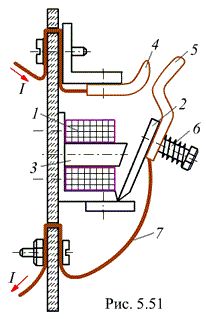

5.6.3.1. Контакторы
Частые включения и выключения мощных электрических цепей и электрических машин с напряжением до 500…600 В при нормальном режиме работы обычно производятся электромагнитными контакторами– выключателями с электромагнитным управлением. В некоторых случаях контакторы вместе с реле могут попутно осуществлять защиту электрических установок.

Электромагнитный контактор (рис. 5.51) имеет втягивающую катушку 1, подвижный якорь 2, сердечник 3, систему главных контактов, состоящую из неподвижных 4 и подвижных 5 контактов, устройство для дугогашения (на рисунке не показано), демпфирующую пружину 6, гибкий токопровод 7 и часто снабжается комплектом вспомогательных контактов, обычно изготавливаемых в виде готового элемента, пристраиваемого к контактору. Вспомогательные контакты рычажного или мостикового типа используются для вспомогательных переключений в различных цепях управления. Главные контакты рассчитаны на включение и отключение относительно больших токов (до 2500 А).
Втягивающая катушка, имеющая небольшие рабочие токи, включается и отключается от источника напряжения дистанционно. Под действием намагничивающего тока в катушке 1 к её сердечнику 3 притягивается якорь 2 и замыкает главные контакты 4 и 5. Рабочий ток проходит через замкнутые контакты и гибкий токопровод 7. Кроме главной цепи контактор замыкает и размыкает вспомогательные контакты, служащие для выполнения операций управления. Если прекратить подачу тока в катушку 1, главные 4 и 5, а также вспомогательные контакты разомкнутся. При размыкании главных контактов, через которые проходит рабочий ток, может возникнуть (в особенности при индуктивной нагрузке) электрическая дуга. Для её интенсивного гашения на контакты надевают дугогасительную камеру с решёткой из медных пластин.
Основными величинами, характеризующими контактор, помимо номинального тока (согласно ряду: 20, 40, 63, 75, 100, 160, 250, 400 А и т. д.), являются: время срабатывания (0,06…0,32 с), время отпускания якоря (0,03…0,5 с) и напряжение втягивающей катушки (24…380 В).